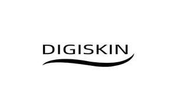

Trade Mark Journal No.2025/016 18 April 2025
UK00004172588 12 March 2025 (3,10,11,21,35,44)

- Class 3
- Eye cosmetics; Cleansing products for the eyes; Eye lotions; Eye creams; Cosmetic eye gels; Cosmetic eye pencils; Eye makeup; Eye make-up; Eye make-up removers; Eye wrinkle lotions; Eye gels; Eye cream; Eye stylers; Eye pencils; Cosmetic products in the form of aerosols for skin care; Liners [cosmetics] for the eyes; Cosmetics in the form of eye shadow; Gel eye patches for cosmetic purposes; Eye gel; Colour cosmetics for the eyes; Cosmetic products for the shower; Sets of cosmetic oral care products; Eye makeup remover; Gel eye masks; Eye compresses for cosmetic purposes; Eye liner; Eye sticks; Eye brightening correctors; Cosmetic creams for firming skin around eyes; Eye shadows; Fragrance sachets for eye pillows; Creams (Non-medicated -) for the eyes; Face masks; Make-up for the face; Face wash; Face wipes; Face paint; Face blusher; Face and body masks; Face scrub; Face paints; Face creams; Face powder; Face glitter; Face powders; Make-up for the face and body; Face packs; Face and body glitter; Face oils; Face and body creams; Face gels; Face wash [cosmetic]; Pressed face powder; Cleaning masks for the face; Face and body lotions; Face powder [for cosmetic use]; Loose face powder; Exfoliating scrubs for the face; Face packs [cosmetic]; Make-up preparations for the face and body; Liquid soaps for hands and face; Face scrubs (Non-medicated -); Face cream (Non-medicated -); Cosmetic face powders; Face powders [for cosmetic use]; Face powder (Non-medicated -); Creamy face powder; Face dusting powders; Cosmetic paste for application to the face to counteract glare; Cosmetic white face powder; Face creams for cosmetic use; Beauty tonics for application to the face; Face lifting stickers for cosmetic use; Face powder in the form of powder-coated paper; Eyes make-up; Beauty masks for hands; Non-medicated face care preparations; Disposable wipes impregnated with cleansing compounds for use on the face; Hand masks for skin care; Facial masks; Body mask cream; Facial beauty masks; Facial wash; Body mask powder; Skin masks; Body mask lotion; Body masks; Clay skin masks; Skin moisturizer masks; Hair masks; Foot masks for skin care; Facial concealer; Cosmetic facial masks; Facial masks [cosmetic]; Facial makeup; Facial washes; Skin make-up; Pores tightening mask packs used as cosmetics; Hair and body wash; Sun protectors for lips; Lip glosses; Lip balm; Lip balms; Cheek rouges; Lip gloss; Lip makeup; Lip tints; Lip cosmetics; Lip rouge; Lip cream; Lip gloss palettes; Lip pomades; Lip pencils; Cheek colors; Lip liner; Cosmetic pencils for cheeks; Cheek colours; Lip conditioners; Lipstick; Lip liners; Lip balm [non-medicated]; Mouth washes; Eyebrow mascara; Lip balms [non-medicated]; Non-medicated lip balms; Eyes pencils; Eyelashes; Adhesives for false eyelashes, hair and nails; Lip neutralizers; Cosmetic preparations for the care of mouth and teeth; Lip polisher; Lip protectors [cosmetic]; Non-medicated mouth sprays; Lipsticks; Hair balms; Blush pencils; Lip coatings [cosmetic]; Non-medicated mouth rinse; Lip coatings (Non-medicated -); Eyebrows [false]; Cosmetics for eye-brows; Cosmetics for eye-lashes; Eye-shadow; Hair mascara; Self-adhesive false eyebrows; Lip protectors (Non-medicated -); Eyebrow cosmetics; Lip care preparations; Lip stains for cosmetic purposes; Eyebrow powder; Eyebrow colors; Eyebrow pencils; Pencils (Eyebrow -); Cosmetics for use on the skin.
- Class 10
- Physical therapy devices; Ultrasound therapy apparatus; Bioresonance pulse device; Heat therapy apparatus; Apparatus for acupressure therapy; Massage apparatus [for medical purposes]; Water therapy apparatus for medical use; Massage apparatus; Eye testing apparatus; Electrotherapy instruments for slimming treatments; Electrotherapy instruments for firming treatments; Electro-stimulation apparatus for use in therapeutic treatment; Medical devices for moxibustion therapy; Electric esthetic massage apparatus; Electromedical instruments for slimming treatments; Massage apparatus, electric or non-electric; Testing apparatus for medical purposes; Massage apparatus for eyes; Body massagers; Electric facial aesthetic treatment apparatus, other than facial steamers; Therapeutic facial masks; Massage chairs with built-in massage apparatus; Neck massage apparatus; Massage appliances; Instruments for massage; Facial aesthetic treatment apparatus using ultrasonic waves; Esthetic massage apparatus; Electric massage rollers; Thermal massage pads; LED facial aesthetic treatment apparatus; Massage apparatus for neck and shoulders; Medical skin enhancement apparatus using lasers.
- Class 11
- Facial saunas; Facial sauna apparatus; Steam facial apparatus [saunas]; Steam facial apparatus.
- Class 21
- Eye make-up applicators; Applicators for applying eye make-up; Make-up removing appliances; Cosmetics brushes; Non-electric make-up removing appliances; Appliances for removing make-up, non-electric; Electric make-up removing appliances; Eyeliner brushes; Electric facial cleansers.
- Class 35
- Online retail store services relating to cosmetic and beauty products; Online retail services relating to cosmetics; Mail order retail services for cosmetics; Retail services in relation to hair products; Marketing research in the fields of cosmetics, perfumery and beauty products; Retail services in relation to dairy products.
- Class 44
- Beauty care; Beauty care services; Hygienic and beauty care; Hygienic and beauty care services; Beauty care of feet; Human hygiene and beauty care; Hygienic and beauty care for humans; Beauty care services provided by a health spa; Provision of hygienic and beauty care services; Beauty treatment; Beauty care for human beings; Health care; Consultancy in the field of body and beauty care; Hygienic and beauty care for human beings; Consultation services relating to beauty care; Information relating to beauty care; Beauty treatment services; Skin care salons; Skin care salon services; Advisory services relating to beauty care; Beauty spa services; Services for the care of the skin; Services for the care of the hair; Hair care services; Facial beauty treatment services; Beauty therapy services; Beauty treatment services especially for eyelashes; Nail care services; Beauty salons; Services for the care of the face; Services of a hair and beauty salon; Beauty consultation; Beauty counselling; Health care relating to relaxation therapy; Beauty consultation services; Health care relating to hydrotherapy; Provision of health care services; Beauty information services; Beauty therapy treatments; Facial treatment services.
ELLAN BIOTICS GROUP LTD